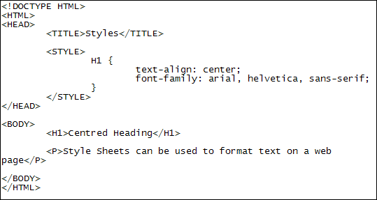
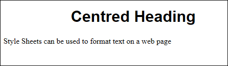
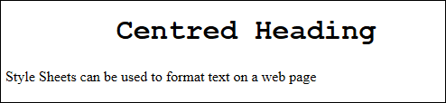

CSS and Fonts
In HTML versions prior to the new version, which is HTML 5, you could specify a Font with HTML tags. If you wanted Arial, for example, you could do this:
<FONT face="Arial, Helvetica, san-serif">Some text here</FONT>
However, In HTML 5 the FONT tag is deprecated. That doesn’t mean you can’t use it anymore, as browsers are backward compatible, meaning that older code will work with all browsers. But if you want to go with the modern way of doing things then fonts, font sizes, and font colours should be done with a Stylesheet.
To change the font on your page, the font-family CSS property is used:
font-family: arial, helvetica, sans-serif;
You specify the family because the person viewing your page might not have the first font on your list. In which case, the second font is tried, then the third. (You can have more than three, if you want. Or less than three.)
You can specify a single font instead, but not everybody has that fancy font you like so much. In which case, they would get the default, which is usually a serif font.
NOTE: A serif is mark or embellishment on the vertical or horizontal line of text. Here’s an example of the serif font Times New Roman:
A sans-serif font is one without marks or embellishment. Just straight lines, in other words. Here’s the sans-serif font Arial:
And here are some default font families you can use quite safely:
Times New Roman, Times, Serif
Courier New, Courier, Mono
Georgia, Times New Roman, Times, Serif
Verdana, Arial, Helvetica, Sans-Serif
Geneva, Arial, Helvetica, San-Serif
Try them out for yourself with the following font-family style added to your H1 code:

Save and refresh your browser. The heading should change from a default serif font to one of the sans-serif fonts: Arial, Helvetica, sans-serif.
But your browser should look like this:

Now try one of the other font-families on the list. Here’s what your browser will look like if your try Courier New, Courier, Mono:

In the next lesson, you'll learn about font colours.